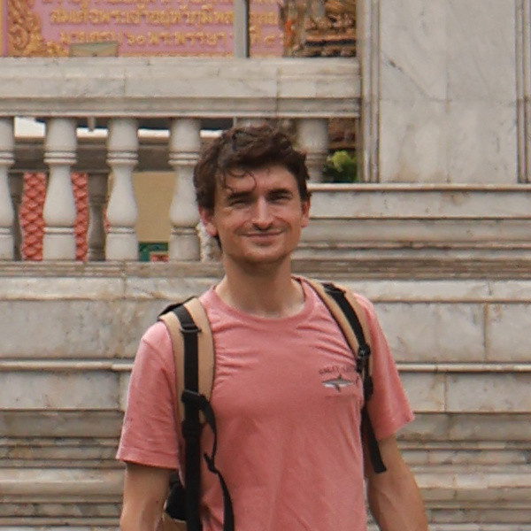
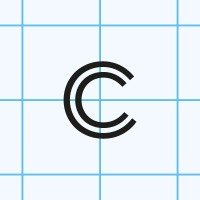
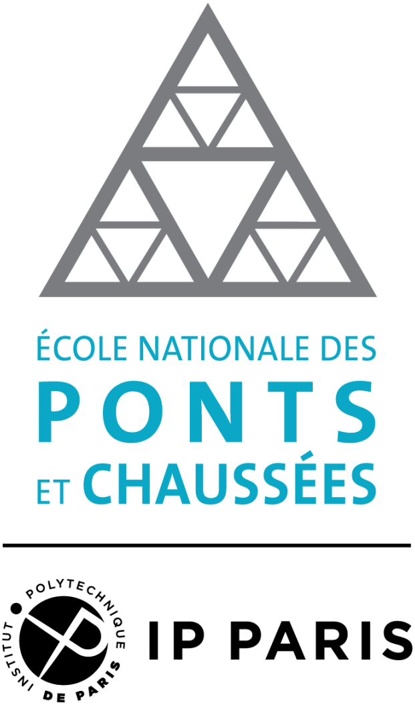
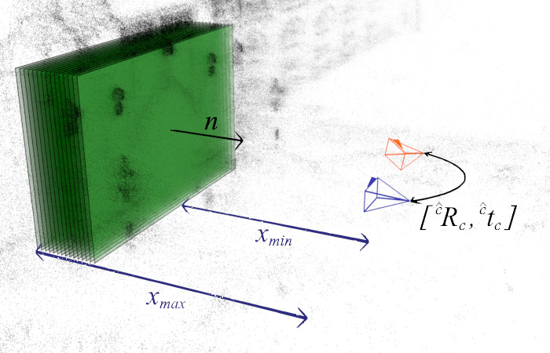

My research involves deep learning, visual localization and 3D reconstruction – more generally 3D vision for robotics and scene understanding.
E-Mail Google Scholar Twitter LinkedInArslan Artykov, Clémentin Boittiaux, Vincent Lepetit
A novel method for estimating the structure and joint parameters of articulated objects from a single casual video, captured by a potentially moving camera.
paper supplementary material project pageClémentin Boittiaux, Vincent Lepetit
A Python Blender-based simulation framework designed to benchmark scene exploration, 3D reconstruction, and semantic segmentation tasks in both static and dynamic environments.
paper project page code Blender fileShiyao Li, Antoine Guédon, Clémentin Boittiaux, Shizhe Chen, Vincent Lepetit
A method for generating the next-best-path for efficient active mapping, along with a new benchmark tailored for complex indoor environments.
paper project page code datasetClémentin Boittiaux, Ricard Marxer, Claire Dune, Aurélien Arnaubec, Maxime Ferrera, Vincent Hugel
Use SfM/MVS dense reconstruction to recover the colors of underwater images.
paper project page codeClémentin Boittiaux, Claire Dune, Maxime Ferrera, Aurélien Arnaubec, Ricard Marxer, Marjolaine Matabos, Loïc Van Audenhaege, Vincent Hugel
The dataset presents four dives on the Eiffel Tower hydrothermal vent over a five-year period. We provide images, navigation data and a unified SfM ground truth.
paper code datasetClémentin Boittiaux, Ricard Marxer, Claire Dune, Aurélien Arnaubec, Vincent Hugel
Approximating the reprojection error through homographies addresses differentiability issues for camera pose regression in deep learning applications.
paper code video